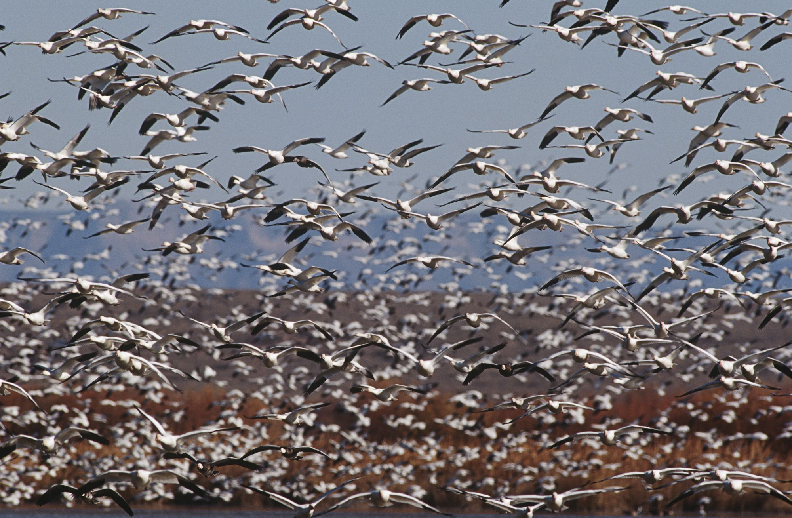
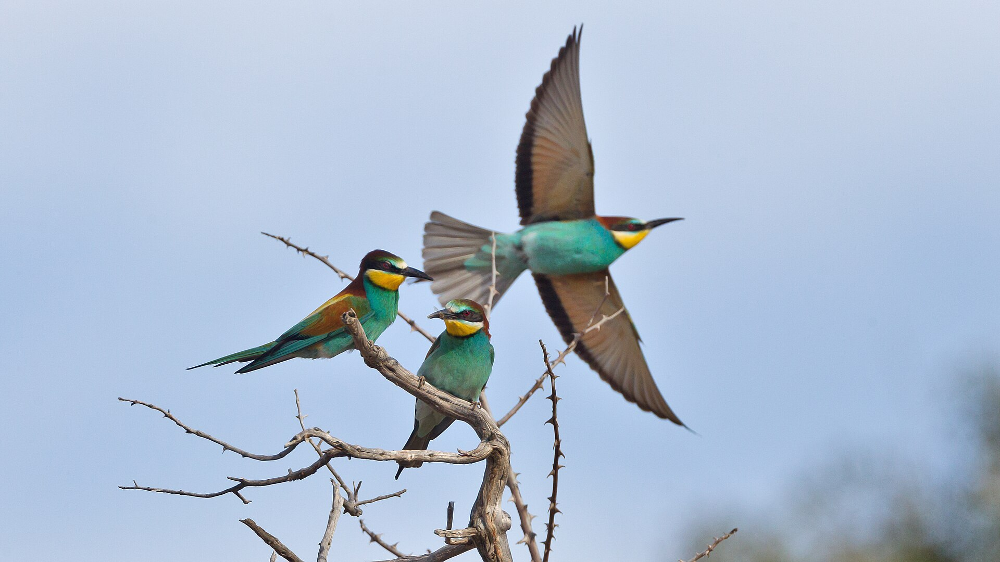

خاص بمجلة صيد | قراءة افتتاحية في تقرير «حالة طيور العالم» (State of the World's Birds)

لم تعد رحلات الهجرة الموسمية مجرد مشهد بديع لأسراب تعبر الأفق مع تبدل الفصول، بل تحولت إلى مؤشر حيوي بالغ الدقة لقياس نبض كوكب الأرض وصحة أنظمته البيئية. في نسخته الأحدث المخصصة بالكامل لشبكات الهجرة العابرة للقارات، أطلق الاتحاد العالمي للحفاظ على الطيور «بيرد لايف إنترناشونال» (BirdLife International) تقريره الرائد، كاشفاً عن صورة قاتمة ومعقدة لما تعانيه الطيور المهاجرة؛ حيث تواجه أسرابها ضغوطاً متصاعدة تعيد رسم خريطة التنوع الحيوي في العالم.
نزيف الأعداد: 45% من الأنواع في انحدار مستمر
يستند التقرير إلى قاعدة بيانات علمية شملت تقييم 1,843 نوعاً من الطيور المهاجرة حول العالم، مبيناً أن 45% من هذه الأنواع تسجل تراجعاً عددياً متواصلاً في مختلف مساراتها، في حين أن 14% فقط تحقق زيادة في أعدادها، و30% تحافظ على استقرار نسبي.
وتشير البيانات إلى أن واحداً من كل تسعة أنواع (نحو 11%، أي 200 نوع) بات مهدداً بالانقراض عالمياً وفق معايير القائمة الحمراء الصادرة عن الاتحاد الدولي لحفظ الطبيعة (IUCN). وتتوزع درجات الخطر بين 32 نوعاً مصنفة كمهددة بشكل حرج للغاية، و57 نوعاً مصنفة كمهددة بالانقراض، و111 نوعاً مصنفة كمعرضة للخطر، إلى جانب عشرات الأنواع الأخرى القريبة من دائرة التهديد، مما يعكس اتساع رقعة الأزمة لتشمل مجموعات بيئية واسعة.
الفئات الأكثر هشاشة: طيور الشواطئ والمحيطات في الصدارة
تُظهر مخرجات التقرير أن البيئات الرطبة والبحرية تشهد التأثير الأشد وطأة؛ إذ تعاني 54% من طيور الشواطئ والخوّاضة المهاجرة من تراجع حاد، نتيجة تجفيف السبخات وردم السواحل ومناطق المد والجزر التي تشكل «محطات وقود» حيوية لإعادة التزود بالطاقة قبل عبور الصحارى والبحار.
كما يواجه 49% من أنواع الطيور البحرية انخفاضاً مشابهاً بسبب الصيد العرضي في شباك وخيوط الصيد في أعالي البحار، بالإضافة إلى التلوث البلاستيكي وتدهور المخزون السمكي. وحتى الطيور التي كانت تعد شائعة في مواسم الصيد والهجرة، مثل القمري الأوروبي (European Turtle-dove) وبعض أنواع البط والغِرّ، باتت تعاني من انخفاضات متتالية دفعت إلى فرض قيود دولية مشددة لحمايتها.

فخاخ المسار: حين تصطدم الأجنحة بالبنية التحتية والأنشطة البشرية
يركز التقرير على أن حماية الطائر المهاجر في دولة التكاثر وحدها لا تضمن نجاته ما لم تكن محطات التوقف ومناطق التشتية آمنة بالقدر ذاته. وتتداخل التهديدات الرئيسية عبر المسارات الدولية لتشمل:
- فقدان الموائل الحيوية وتدهورها: رصد التقرير أن ما يزيد على 58% من أصل 1,099 منطقة ذات أهمية عالمية للطيور (KBAs) تعاني من حالة تدهور شديدة نتيجة التوسع الزراعي المكثف والأنشطة الصناعية وتجفيف المستنقعات.
- الصيد غير المنظم وغير القانوني: استمرار ممارسات الشباك الساحلية الطويلة، وأجهزة النداء الصوتية الإلكترونية، والصيد خارج الفترات المسموحة، لا سيما في «عنق الزجاجة» بالبحر المتوسط والشرق الأوسط، حيث تشير التقديرات إلى استنزاف عشرات الملايين من الطيور سنوياً.
- ممرات الطاقة والرياح: إقامة مزارع الرياح وخطوط التوتر العالي غير المعزولة في الممرات الحرارية الضيقة، مما يتسبب في حوادث تصادم وصعق كهربائي متكررة للطيور الحوامة كالنسور واللقالق والصقور.
- تغير المناخ والأنواع الغازية: اضطراب مواعيد توفر الغذاء في محطات الوصول، فضلاً عن افتراس القوارض والحيوانات الدخيلة لأعشاش الطيور في الجزر النائية.
من التشخيص إلى الإنقاذ: نافذة الأمل وإعلان نيروبي
لم يقتصر التقرير على سرد الأرقام القاتمة، بل شدد على أن «علم الحفظ الحيوي يؤتي ثماره حين تتكامل الجهود الدولية». وشهدت قمة مسارات الهجرة العالمية تبني «إعلان نيروبي لمسارات الهجرة» (Nairobi Flyways Declaration)، الذي التزمت بموجبه حكومات وبنوك تنمية دولية (منها البنك الدولي) بتوفير مليارات الدولارات لحماية شبكات الأراضي الرطبة واستعادة المسارات الآمنة.
إن الرسالة الأبرز التي يوجهها تقرير «بيرد لايف» إلى المجتمعات وعشاق البرية والصيادين على حد سواء هي أن الطيور المهاجرة كائنات تعبر الحدود السياسية دون جوازات سفر؛ وصونها يتطلب الانتقال من الحماية المحلية المحدودة إلى إدارة متكاملة ومستدامة على امتداد مسار الهجرة بأكمله، ضماناً لبقاء هذه الأسراب في فضائنا لأجيال قادمة.